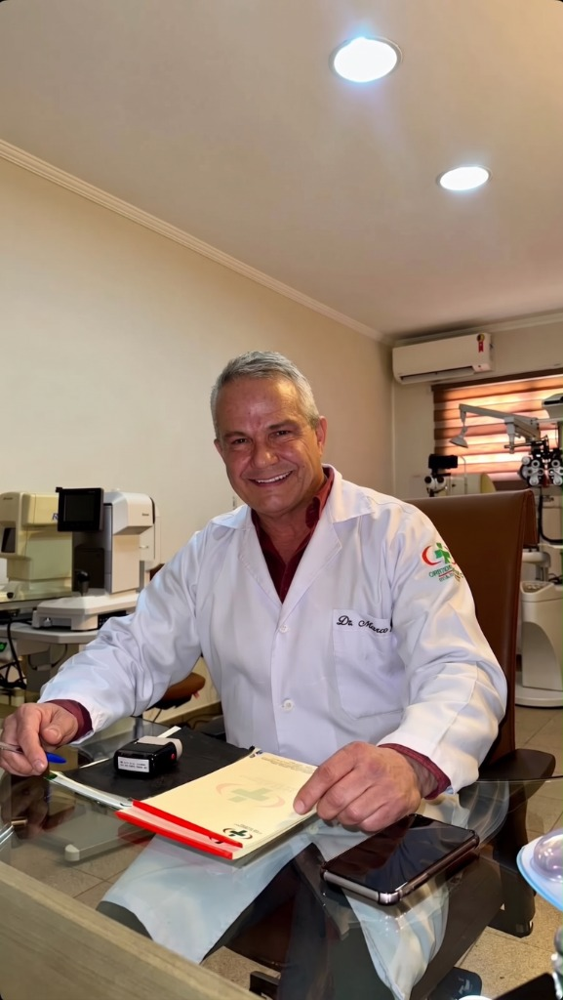
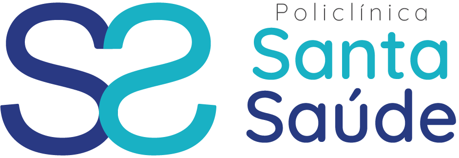

Atendimento médico com escuta, atenção e compromisso contínuo no coração de Santa Felicidade.
Agendar Consulta
O Dr. Marco Antonio dos Reis atua há décadas no bairro de Santa Felicidade, oferecendo atendimento médico com escuta, atenção e compromisso com o cuidado contínuo da saúde.
Graduado pela Universidade Federal do Paraná, ele é reconhecido pelos pacientes pela postura ética e confiável ao longo dos anos de atendimento.
Se você valoriza um acompanhamento médico de longa data, feito com proximidade, responsabilidade e dedicação à comunidade, entre em contato e agende a sua consulta com o Dr. Reis.
Diagnóstico preciso com a atenção que a sua saúde visual exige.
Avaliação completa da acuidade visual e determinação precisa de grau para óculos ou lentes de contato, identificando miopia, hipermetropia e astigmatismo.
Tonometria (medição da pressão intraocular) e análise do nervo óptico, fundamentais para a detecção e controle precoce do glaucoma.
Biomicroscopia detalhada que permite mapear a retina e o nervo óptico, diagnosticando condições oculares e monitorando doenças sistêmicas.
Diagnóstico e avaliação pré-operatória minuciosa para pacientes com indicação cirúrgica, priorizando a segurança e recuperação visual.
O consultório está localizado em uma das clínicas mais tradicionais de Santa Felicidade, oferecendo segurança, conforto e fácil acesso aos pacientes da região.
Atendemos consultas particulares com dedicação plena e também os principais convênios médicos. Consulte nossa central para verificar sua cobertura.
📍 Av. Manoel Ribas, 6972
Santa Felicidade, Curitiba - PR
🕒 Segunda a sexta: 8h às 17h
📞 (41) 3273-6456 | (41) 99994-0807

"Um profissional que alia a competência técnica com o atendimento humano. Escuta com atenção e transmite muita confiança em cada diagnóstico. É o oftalmologista da nossa família há anos."
Você pode agendar facilmente sua consulta pelos telefones (41) 3273-6456 e pelo WhatsApp (41) 99994-0807 na Policlínica Santa Saúde, de segunda a sexta-feira, das 8h às 17h.
O consultório está situado na Policlínica Santa Saúde, na Avenida Manoel Ribas, 6972, no nobre bairro de Santa Felicidade em Curitiba/PR, ao lado do tradicional Restaurante Veneza e próximo ao Terminal de Santa Felicidade.
A consulta abrange exame refrativo computadorizado e manual para prescrição de óculos/lentes, tonometria de aplanação (medida da pressão dos olhos), biomicroscopia em lâmpada de fenda, exame de fundo de olho (retina/nervo óptico) e avaliação para cirurgias como catarata.
A dilatação da pupila depende da avaliação individual de cada paciente, sendo fundamental para mapear detalhadamente o fundo de olho e verificar a retina. Recomenda-se trazer óculos escuros e, se possível, um acompanhante.
O Dr. Marco Antonio atende tanto consultas particulares com tempo estendido e dedicação plena quanto os principais planos de saúde e convênios aceitos pela Policlínica Santa Saúde. Consulte nossa central para verificar o seu convênio.